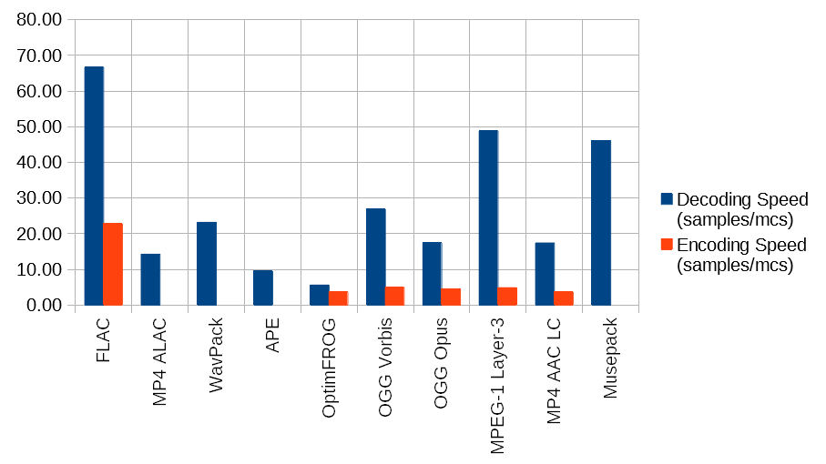

The goal of this article is to show the differences between several audio formats and codecs. It covers lossless (FLAC, ALAC, APE, WavPack) and lossy audio codecs (Vorbis, Opus, MPEG, AAC, Musepack). There is information about file formats that are used for storing audio data, meta tags supported by different file formats and the results of some performance tests. In the end of this article I'll describe how you can perform similar tests by yourself.
This article doesn't claim which audio format is the best and which is the worst, because to do that it would require to test each format with a wide variety of music, with a large variety of audio settings (encoder settings, audio format), with different codec implementations and on different hardware. I think it's impossible to pick the best format for *every* use, especially from lossy audio formats. However, this document can help you to decide which audio format is more suitable for your needs.
Contents:
OVERALL
This table shows the short summary information about audio formats and accumulated results of the performance tests.
Compression Ratio: the difference between uncompressed and compressed file, applies to Lossless only, the lower - the better.
Decoding/Encoding Speed shows how many audio samples are processed per time unit, the higher - the better. This is an average value of all tests shown below, read section "Performance Tests" for more details.

Chart 1. Performance of audio formats.
Audio data inside a WAVE file is stored uncompressed, it doesn't require any decoding or encoding work to do, therefore its compression ratio is 1:1 and the speed is unlimited. Actually, there is a very small amount of time required to read and write WAVE files, but I chose not to include it here, because it only shows the speed of system memory and disk.
All lossless codecs have similar compression ratio. However, decoding speed is different: FLAC is almost 3 times faster than WavPack and 6 times faster than APE. Although these numbers were produced by fmedia, other audio tools show very similar decoding performance.
As for lossy codecs, I can't show any proof, but other sources claim that sound quality of Vorbis and AAC are better than MPEG-1 Layer-3 for the same bitrate. In other words, to achieve the same quality of MP3's 320kbps, Vorbis and AAC require less bitrate value, e.g. just 256kbps, but this is arguable. However, the same sources also claim that for AAC there's a big difference in sound quality between files produced by different encoders, and that libfdk-aac has quite good quality.
AUDIO FILE FORMATS COMPARISON
In this section I present to you the comparison of audio file formats. Audio data compressed with one of the codec listed above is stored within an audio file, each codec uses its own data container format. They all have their similarities and differences, so the table below gathers everything together.
More details and notes on each aspect:
Lossless
Whether a format supports lossless audio. A lossless audio encoder compresses audio in a way that after decompression you'll have a 100% quality audio, exactly as the original source. Such encoder works similar to the way how ZIP packer compresses text files, so after you unpack it the text is exactly the same as it was: without any words missing or letters interchanged. MP4 may contain lossless (ALAC) and lossy (AAC) audio. WavPack supports lossy audio as well as lossless.
Fast accurate seeking
Whether it's possible to effectively find within a physical stream an audio frame containing the target audio sample. To seek on an audio file it's required to convert the audio sample number into a file position where the needed audio data is stored. For a constant-bitrate stream like WAVE and MP3 CBR it's easy to find the needed audio frame in just one file seek request.
But for a variable-bitrate stream a so called "seek table" must be used to achieve faster seeking. Using seek table one can find in which place within the file the needed audio is stored. Having a seek table is vital for a fast seeking within a large stream with a non-linear distribution of audio data. Without it, the seeking algorithm needs to guess the most probable file offset, perform a file read from this position, find an audio frame, get its audio position and if it's not the frame we're looking for, repeat the same algorithm over and over again until the needed frame is found. From my experience, this cycle can be repeated up to 15 times depending on a format and audio data, and the most performance-expensive operation is reading from an arbitrary file offset. In fmedia I succeeded to achieve better precision in seeking on FLAC and WavPack files than the mainstream libraries themselves, reducing the number of seek requests, but still this is all the unneeded work for the system.
FLAC supports this feature but only if encoder has added a seek table during creation of a file.
Although an APE file always has a seek table, APE frames are very large and this slows down seeking anyway. This is because media player still needs to decode the whole frame to reach the target audio sample and, knowing that APE decoding is rather slow, it may take even more time than the couple of excessive file reads.
Seeking in .mp3 files is always fast, not just for CBR but also for VBR files, because they usually have Xing or VBRI tags containing a seek table. But .mp3 files have one big disadvantage that no other format has: there's no information about audio position in MPEG frames. After a file seek is done, we can only hope that this position is in fact our target. So for sample-accurate seeking in mp3 it's needed to have a complete table of MPEG frames and file offsets. A solution to this problem might be to keep track of all frames that are already processed and then to scan forward all next frames before we reach the target.
Streaming
Whether it's possible to stream the audio over an unseekable media. .wav and .mp4 containers may have meta data stored at the end of file, making the streaming of such files impossible.
CRC
Whether a format provides a checksum to ensure that audio data isn't corrupted. The point here is that the corrupted audio data should be skipped, it shouldn't be played because it can produce unbearable sound. mp3 format has this feature but noone uses it in practice.
No EOF reading
Whether reading from the end of file isn't required before starting playback. This is a pure performance issue and the only 100% winner here is FLAC format.
OGG. Together with the lack of seek table inability to tell whether an OGG page is the target one makes seeking in OGG the most difficult task compared to all other formats. Since the OGG header isn't enough to get the total audio length, it's required to read from the end of file. This is the most annoying drawback of OGG format.
Other formats don't actually *require* seeking to EOF, but still it's performed if the format supports APE tag or ID3v1 because media player usually reads meta tags before starting playback. APE tag is stored in the end of file probably because it's easier to expand it without the need to rewrite the whole file as it would require for uncarefully crafted ID3v2. However, the solution to this problem is simple: to use padding. For example, for an audio file of size 6MB, even if its tags would be 64KB of size (which is never useful, though) with 63KB filled with spaces, it's just 1% of the whole file size. The more realistic example is when tags with all artist/album/title info and lyrics embedded would only result in ~10KB without an album cover picture. And because album covers and pictures are usually stored within tags only one time - at the time of creation, - storing tags in the end of file is just pointless, in my opinion.
PERFORMANCE TESTS
Obviously, performance tests don't show the speed of audio format but the speed of specific encoder/decoder implementation. Don't judge too quickly, the results here depend dramatically on an audio library that is used to do the audio processing, operating system, processor architecture and other computer hardware. The size of encoded files can also vary: although I try to use similar settings for each encoder, they still aren't identical.
These tests were performed by fmedia v0.16 on 64-bit Windows, Intel Core i5-4200U. The accuracy of these results should be very high because they show how much time is spent for processing the track, not taking into account the time needed to start the system process, read configuration or do other irrelevant work. Also, fmedia spends 95%..99% of the time inside 3rd party libraries - mainstream codec implementations like libvorbis, libFLAC, and others, - and due to its very low footprint fmedia actually shows the pure performance of those libraries running in specific conditions. Note: fmedia can't encode into APE, WavPack and ALAC. These test files were created using other free tools.
Another small note is that the same tests usually run slightly faster on Linux, probably due to the fact that Windows version of fmedia and all audio libraries are built with gcc cross-platform tools that might not produce very well optimized bytecode for Windows. Or maybe it's because system I/O, which still has a small influence on the results of all these tests, in Linux is faster than in Windows.
So, currently there are 2 tracks I used for testing, all in Audio CD quality: hi-gain heavy metal song by "Heaven & Hell" and classical symphonic music written by Vivaldi. The goal is to test completely different sound and see how each codec works with it.
Heavy Metal (6:53)
Classic (5:17)
So, libFLAC performs better than anything else in my tests. Respect to its developers for such a big investment in performance!
Notice how fast mp3 decoding is compared to both Vorbis and AAC. fmedia uses libmpg123 to decode mp3 files, it's proven to be much faster than libmad too. I can't tell how accurate decoding is, but from the performance point of view it seems that mp3 is a really good choice as long as media player uses libmpg123.
TEST BY YOURSELF
Here you can learn how to test performance of audio formats by yourself using fmedia. I don't attach any sound files here, it's better if you use your own files, probably in other music genre. If you wish to share your results with others, please send me a message and I'll do my best to edit the article so it reflects all difference in test results.
First you need a good quality WAVE file (a WAVE file converted from mp3 isn't suitable for testing). There are 3 things you should do to build a performance table like the ones above:
- Encode your WAVE file into all other formats and save encoding time for each file.
- Decode all these files and save their decoding time.
- Get decoding and encoding speed using this formula: speed = total_samples * channels / time / 1000000.
For example, to encode the file music.wav into FLAC, Vorbis, Opus, MP3, AAC you should execute these commands one by one:
fmedia music.wav -o music.flac --flac-compression=6 --print-time --notui fmedia music.wav -o music.ogg --vorbis.quality=7.0 --print-time --notui fmedia music.wav -o music.opus --opus.bitrate=192 --print-time --notui fmedia music.wav -o music.mp3 --mpeg-quality=2 --print-time --notui fmedia music.wav -o music.m4a --aac-quality=224 --print-time --notui
Here you instruct fmedia to convert your WAVE file into each of these audio formats with their specific encoding settings. Of course, you can change these settings or try different audio formats.
--print-time switch tells fmedia to show the time spent for processing the track.
--notui is optional but I use it to suppress any other unnecessary output to stdout.
Decoding can be done with this command:
fmedia music.flac -o tmp.wav --print-time --notui
Repeat this command for every file you want to decode.
Of course, you can perform similar tests using other tools. I've just shown how to do it with fmedia.
OptimFROG was tested using the official tool - "ofr". The commands are:
ofr --encode --time music.wav ofr --decode --time music.ofr
CONCLUSION
I tried to cover all main aspects of different audio formats and codecs. I hope the article was helpful. If you find any mistakes or if you have any questions or suggestions, send me a message.